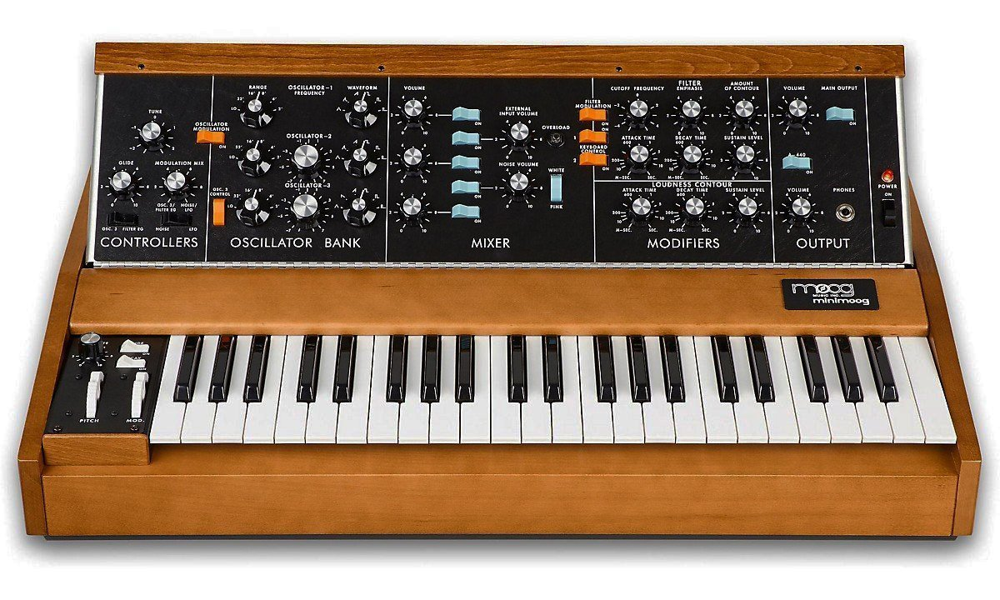

Saxomochrome
Playing the browser like a fiddle
Steve De Jonghe
Mandatory introduction slide
Overview
What is sound?
Oscillation in pressure, stress, particle displacement, particle velocity, etc., propagated in a medium with internal forces (e.g., elastic or viscous), or the superposition of such propagated oscillation.
Say whaaaa?!

High pressure - low pressure

Higher wavelength = higher frequency = higher pitch
Higher amplitude = higher power = higher volume
Terminology
History: Teleharmonium

1897 - Teleharmonium: Considered the first synthetic instrument, used moving parts to generate sound. Weighted over 200 tons.
History: Theremin
1919 - Theremin: No physical contact. One antenna controlls pitch, other controls volume.
History: Coupleux-Givelet
1929 - Automatically Operating Musical Instrument of the Electric Oscillation Type: First instrument to be considered a synthesizer.
History: Electronic Sackbut

1945 - Electronic Sackbut: Closely resembles modern synthesizers, both in form and function.
History: Moog machine

1963 - Moog machine: First voltage-controlled synthesizer using diodes. Still used today.
History: MiniMoog
1970 - MiniMoog Model D: Small and affordable. About 13 000 units sold over 10 years.
History: PolyMoog
1975 - PolyMoog: Polyphonic version of the Moog machine, featured velocity-sensitive keys.
History: Roland TR-808 (and TR-909)

1980 - TR-808: Probably the most iconic drum machine. Still used today.
Web audio API basics
- Make an audio context
- Make an audio source in the context
- Make effects within the context
- Connect source to the effects
- Connect effects to the context destination
The audio context
The AudioContext interface represents an audio-processing graph built from audio modules linked together, each represented by an AudioNode. An audio context controls both the creation of the nodes it contains and the execution of the audio processing, or decoding. - MDN
The audio context
// Feature-test window.AudioContext
var context = new AudioContext();
Audio sources and effects
var osc = context.createOscillator(),
gain = context.createGain();
osc.type = 'sine';
osc.frequency.value = 440;
osc.connect(gain);
gain.connect(context.destination);
osc.start();
Loading samples
var sampleBuffer,
url = 'samples/snare/cd_snare_80s.wav',
request = new XMLHttpRequest();
request.open('GET', url, true);
// Set response type
request.responseType = 'arraybuffer';
request.onload = function() {
// Decode and store buffer
context.decodeAudioData(request.response, function(buffer) {
sampleBuffer = buffer;
});
}
request.send();
Playing a buffer
var playSound = function(buffer, time) {
var sample = context.createBufferSource();
sample.buffer = buffer;
//sample.loop = true;
sample.connect(context.destination);
sample.start(time);
}
playSound(sampleBuffer);
Timing
var startTime = context.currentTime + 0.1;
var tempo = 80; // BPM
var eighthNoteTime = (60 / tempo) / 2;
for (var bar = 0; bar < 2; bar++) {
var time = startTime + bar * 8 * eighthNoteTime;
// Play the toms on beats 1, 5
playSound(tomBuffer, time);
playSound(tomBuffer, time + 4 * eighthNoteTime);
// Play the snare drum on beats 3, 7
playSound(snareBuffer, time + 2 * eighthNoteTime);
playSound(snareBuffer, time + 6 * eighthNoteTime);
// Play the rim every eighthh note.
for (var i = 0; i < 8; ++i) {
playSound(rimBuffer, time + i * eighthNoteTime);
}
}